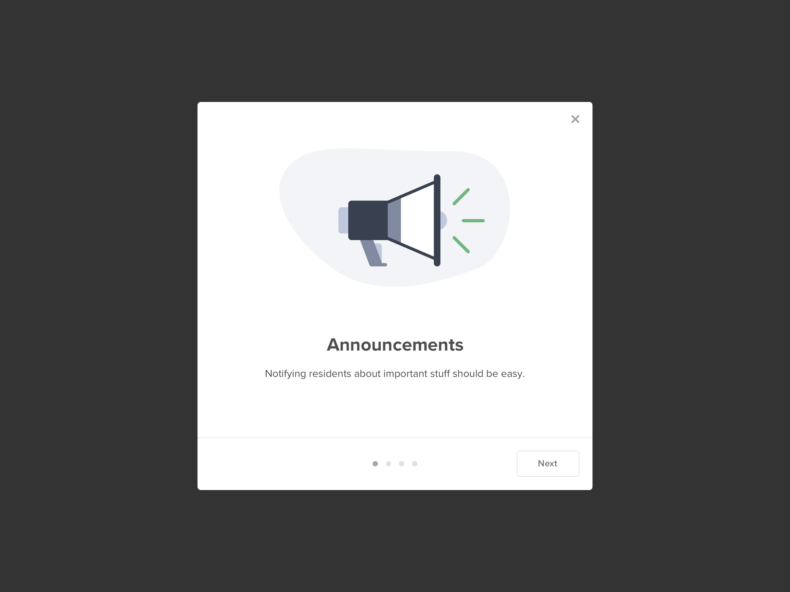
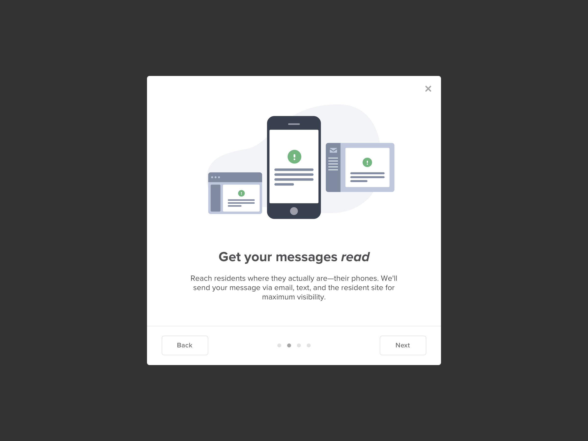
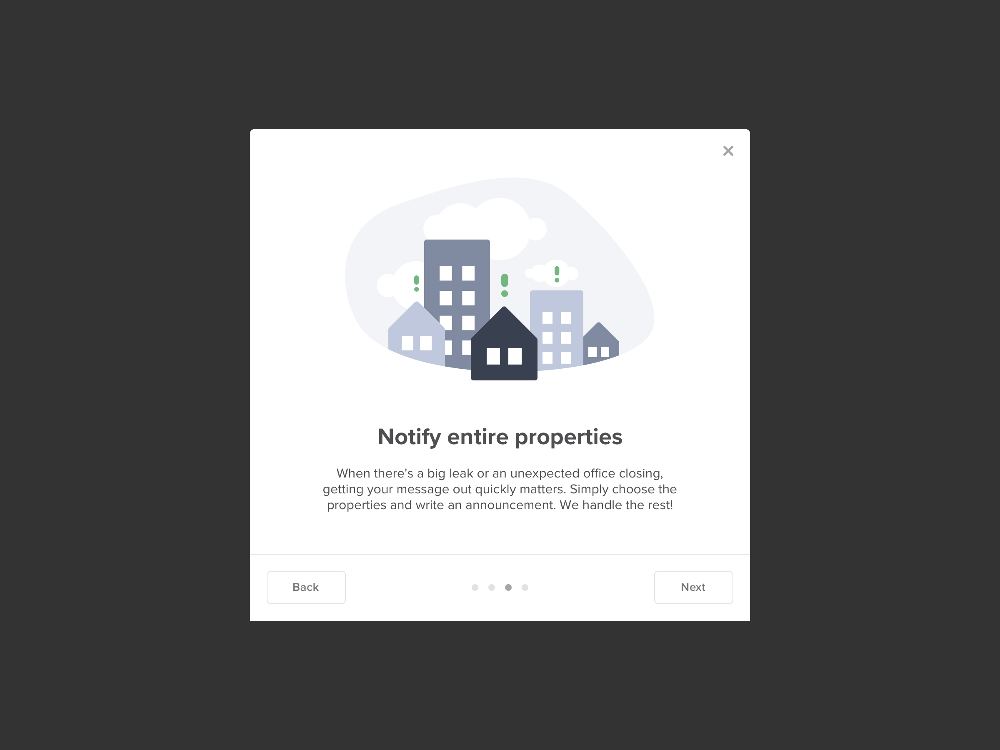
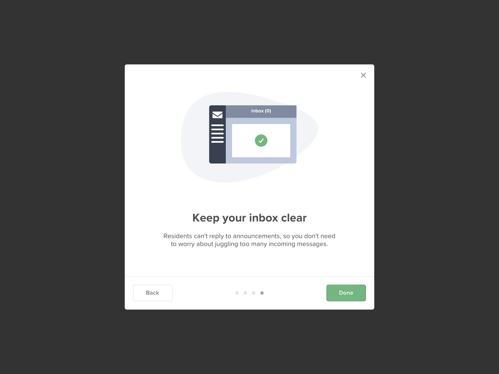
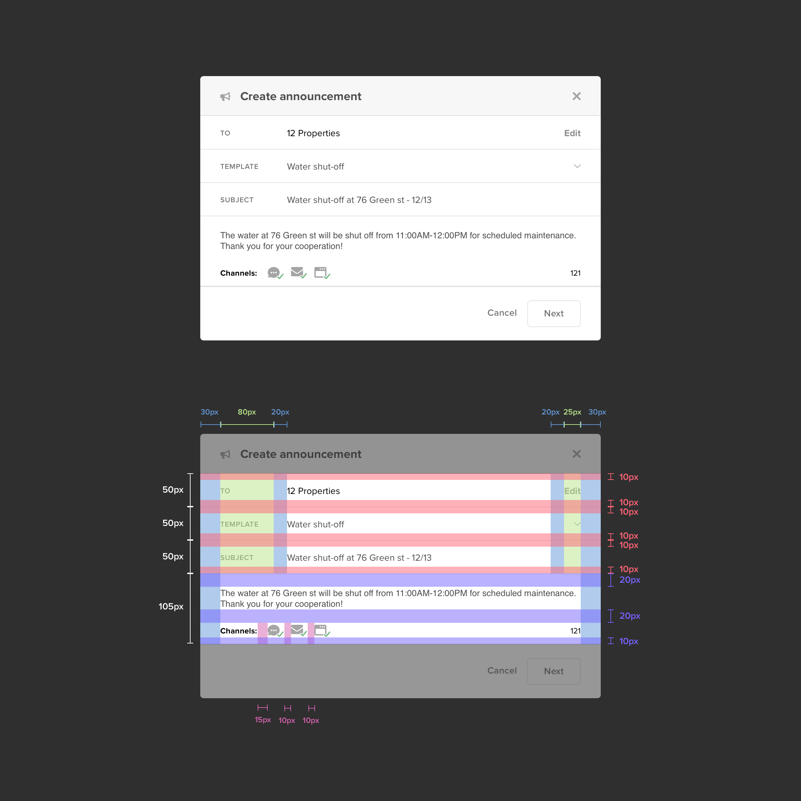
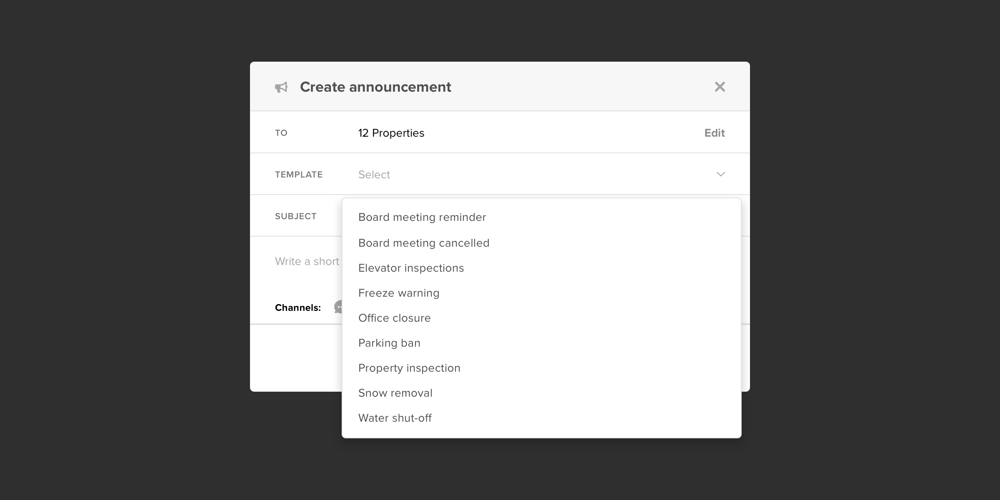
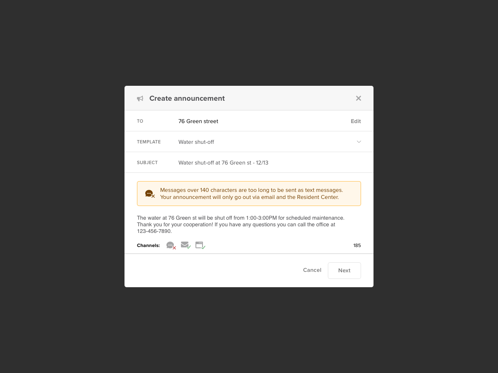
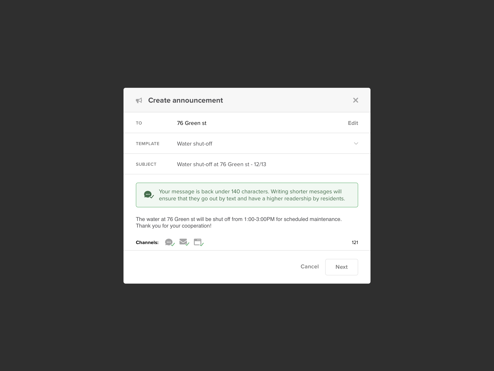
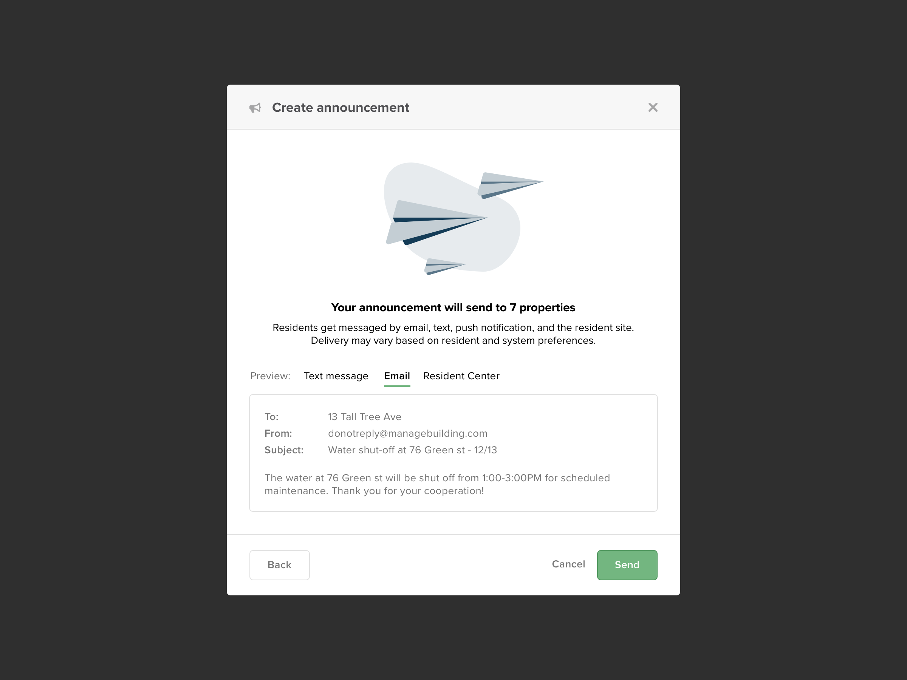

Announcements
Getting messages read.
Getting messages read.
Property managers are often faced with calamity; water leaks, elevator maintenance, missing cats, and more. During urgent situations, they need to reach residents in a timely, efficient way–and ensure their important messages are actually read.
Design a feature that allows property managers to write a message once and blast it across three different communication channels for maximum visibility.
Product Manager, UX Writer, Senior UX Designer (Me), Software Developers (5)
Buildium
This project came to our team via feedback from our customer-facing teams. Users were requesting a "mass texting feature" for communicating with residents. Rather than launching into a solution based on that request, we knew what we needed to do— talk to users!
I worked with my Project Manager and UX Writer to draft a script for informational interviews that helped us better understand how customers communicate with residents. We started out by discussing communication broadly and then slowly narrowed in on the concept of "mass texting" to uncover where their pain points resided.
Communicating urgent messages to residents at entire properties was one of our user's biggest issues. Messages for things like water shutoffs and scheduled maintenance, needed to be read in advance by a resident to prevent a complaint or phone call to their property manager later on. Messages about how to address inclement weather could ensure the safety of residents and the properties they called home. Both messages are urgent and need to be read immediately. However, property managers only had email at their disposal for communicating en masse, which couldn't guarantee prompt readership from all residents.
In order to wrap our heads around these problems, my product manager and I picked up Expo markers and headed to the nearest whiteboard to brainstorm solutions. Several coffees and many hand cramps later, we found a promising path forward: a messaging platform that would send one message via 3 channels (email, text messaging, and posts to a resident's portal account).
After a number of ideation and whiteboarding sessions, we had a good sense of what our solution would be like. From there, I took those ideas and continued to refine them from paper sketches into a low fidelity mockup in Sketch that was turned into an Invision prototype that we could test with our users.
We tested our initial prototypes to positive results from both a usability and concept standpoint. Customers were excited about the prospect of sending out message blasts across multiple channels. However, we were learning that these messages needed to be short. Shorter messages were more likely to be read than the long paragraphs found in a standard email. Also, since these messages would be received via text messages, long paragraphs in a text thread would annoy residents to the point of opting themselves out of texting.
Ultimately, we landed on optimizing the experience around the texting experience. Messages that were optimized for texting provided the best route to get messages read by residents. Shorter messages would also translate easier to our two other channels, Email and Resident Center posts, than longer messages would translate to texting.
Our solution was a feature called "Announcements" that allowed property managers to send one message via 3 channels (email, text messaging, and posts to a resident's portal account). Property managers could write messages up to 140 characters that would be read quickly and comfortably on all channels.
We released "Announcements" as an opt-in beta to gauge feedback before a wider release to our entire customer base.
A survey was launched in tandem with the Announcements beta. The responses were still largely positive overall, however there were quite a few responses that users wanted the ability to write longer messages.
We reached out to customers who had used the beta to get a better sense of what was and wasn't working. While their primary use cases were urgent messages (weather warnings, water shut offs, etc. ), there were also less urgent scenarios where they'd want to have messages go out via multiple channels (e.g. newsletters). These types of messages were typically longer in length and while customers admitted that they didn't want residents to receive them via text message, there was value in them being shared to the Resident Center and via email.
Based on feedback from the beta, we refined "Announcements" and gave users the freedom to write both longer and shorter messages. If they wrote under 140 characters, the message would be sent via all 3 channels (text, email, Resident Center post). However, if their message went over 140 characters the message would only deliver via email and post to the Resident Center.
Our final design was a delivery of a new messaging feature in Buildium's property management application, called "Announcements.” It allowed property managers to quickly and easily send urgent messages to their residents via three communication channels: email, text message, and posts to their Resident Center account. Sending out these messages in a bundle ensured that urgent messages were received promptly by residents across multiple communication channels.
Residents were able to view the message with ease and take action quickly. Our design was also built to be flexible enough to accommodate longer messages that would only go out via email and post to the Resident Center, to keep residents informed about more informal messages.
Working closely with the project’s UX Writer, we crafted a new "introductory modal" experience that enticed users to adopt a feature on their first visit. The experience included four steps—highlighting a different value proposition through hand-crafted illustration and carefully-considered copy.
   We debuted a new pattern for composing messages that matched a user's mental model for sending messages on the web. The components were intentionally designed to be scalable for future "Compose message" experiences (such as email and bulk texting).
We provided a set of prewritten templates for common use cases to make it dead-simple for property managers to write short messages. Having these handy templates educated users on what a well-written message, under 140 characters, should look like.
Flexibility is valuable, but getting messages read is paramount. Our experience enabled users to write messages longer than 140 characters, but it was important that users knew the impact of their action. Messages sent as text had a higher likelihood of being read, so users were alerted the moment they went over 140 characters and would miss out on texting.
 Sending a message to hundreds of recipients can be overwhelming. Giving users a confirmation page gave them a safety net to check how their message would be displayed across each medium and ensure that they were ready to take decisive action.
